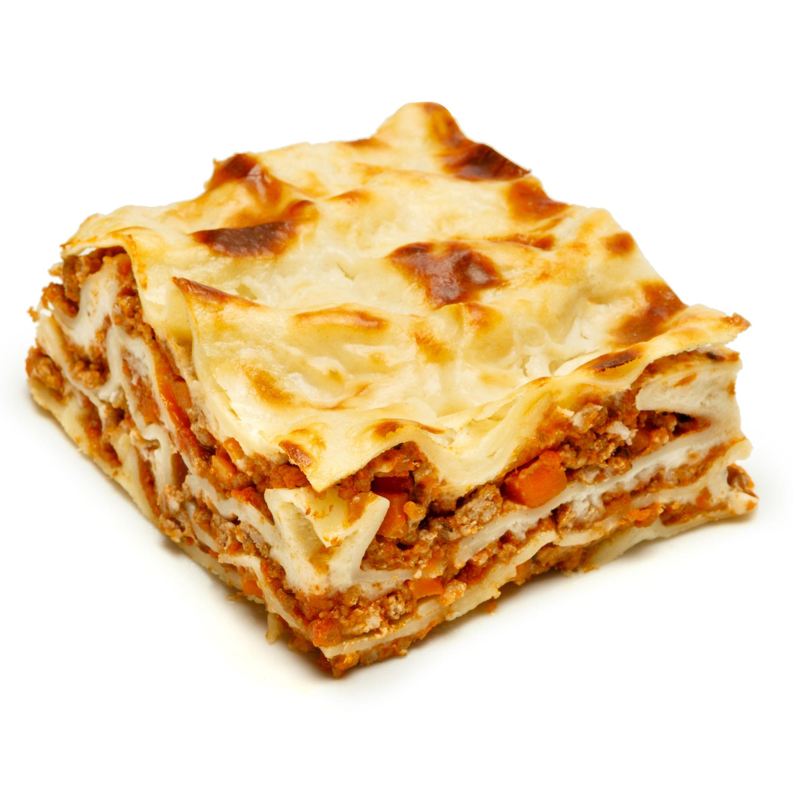

Lasagna

Description
Lasagna is a delicious Italian dish made by layering wide sheets of pasta with a rich meat and tomato sauce, creamy cheese, and melted mozzarella. The layers are baked together until the cheese becomes golden and bubbly.
This comforting dish is perfect for family meals or gatherings. It takes some time to prepare, but the result is a hearty, flavorful meal with a satisfying combination of tender pasta, savory meat, and creamy cheese.
Ingredients
- Lasagna sheets
- Ground beef
- Onion
- Garlic
- Tomato sauce
- Olive oil
- Salt
- Black pepper
- Mozzarella cheese
- Parmesan cheese
Steps
- Preheat the oven to 375°F (190°C).
- Heat olive oil in a pan and sauté the onion and garlic.
- Add the ground beef and cook until browned.
- Add the tomato sauce, salt, black pepper, and Italian seasoning. Simmer for 10–15 minutes.
- Cook the lasagna sheets according to the package instructions.
- Spread a layer of meat sauce in a baking dish.
- Add a layer of lasagna sheets, followed by more meat sauce and cheese.
- Repeat the layers until all the ingredients are used.
- Top with mozzarella and Parmesan cheese.
- Bake for 30–40 minutes, until the cheese is melted and golden.
- Let the lasagna rest for about 10 minutes before serving.
Home Page